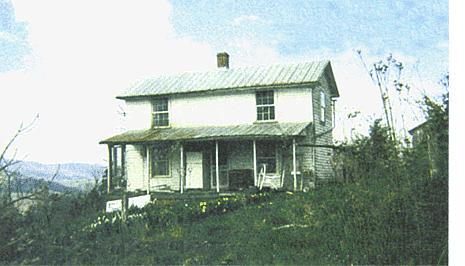

Issue # 174- June/July 1999
Finding funds for hard to finance rural property.
One day, a little road takes you to a gravel drive with "For Sale" sign next to it. You follow that drive up to an old,dilapidated house with sagging porch, rotten steps and broken windows. But look here-a straight roof line and plumb doors, a bold spring in a concrete box-and there, behind the house, a small orchard. Some gestalt mechanism in a far recess of the mind whirs and clicks: home. After two years of searching, my wife and I knew this small homestead in Virginia was the place for us. Then we called our bank.
We had been active members of this bank for almost our entire lives. It held all of our savings. We had obtained in surance, car loans and charge cards there. Our credit was perfect. I was certain we'd be approved for a loan. How could our banker-practically a member of the family-say no? Easily, it seems.
Improved property, i.e., property with a house on it, is a better risk than unim proved property. And the more improved the house itself is, the more improved your chances of sharing a hearty hand shake with your lender.
> Despite sagging porch and rotting steps, it was love at first site for the Blackwells.
Loan officers like known quantities. They get more uncomfortable than a seventh-grade tuba player at a Sadie Hawkins dance when you tell them a house has no water, no wiring, an out house and an address that references your neighbor's barn. The good news is that there are people and institutions that will lend money on the property you want to buy. You just have to find them, convince them you're a good risk-then pay them.
I'd like to pass along some of the things we learned in the process of buying our Virginia homestead. Consider the following a general introduction to financing rural property. This is a complex subject, complicated further by regional differences in land use, Don't hesitate to retain a qualified lawyer, financial planner and/or buyer-broker.
The term mortgage arises out of the Latin root for death. It seems if you didn't fulfill the terms of your medieval mortgage, a nice man would come from the central banking district and kill you. The financial services industry has mellowed over the years, but, still, proceed with caution. Do your homework and always read the fine print. When you borrow money, the lender demands collateral or security-an asset that it can convert to money if you default on the loan. In most real estate transactions, the property itself serves as the collateral. Because the market for rural property is
much more uncertain than it is for urban or suburban homes, lenders are often hesitant to make loans in rural areas. It's a painful experience to find that the place of your dreams isn't deemed wor thy by those holding the purse strings.
Mortgage underwriters will consider your income and employment, credit his tory and assets. For many of us, the re turn to rural life might involve deliberate downscaling, simplicity or even voluntary (hopefully it's voluntary) poverty. When looking for a mortgage, you need to keep these ideals to yourself. Loans for homes and land are loans against your future earnings. You need to show regular in come in the years preceding your pur chase. Begin living the ideal of simplicity on the expense side of the balance sheet by avoiding debt like the plague. You might, however, want to "inoculate" yourself to debt prior to applying for a mortgage by taking on small loans for necessary things like cars or education.
This will begin to build your credit his tory. Keep this history clean by paying your bills on time. Lenders will perform a credit check.
Your lenders will want to see that you have liquid assets-enough to provide a down payment and cover closing costs (usually 2% to 4% of the total cost of the property)-as well as enough reserve savings to provide a buffer against job loss or other financial disruption. The more you are able to pay up front, the less risk you are to a lender. And if you can front 20% of the loan amount, you can avoid paying for mortgage insurance. Don't forget to in clude IRAs and other types of retirement funds in your tally of assets, as well as cash or loan values of life insurance.
The simplest and often the only way to get financing for unimproved or little improved land is to ask the sellers to lend you the money, which you repay gradu ally under the terms of a mortgage. This offers many advantages to both buyer and seller. The seller is paid a lump-sum down payment, receives a monthly payment for the life of the loan, profits additionally from whatever interest is charged the buyer and can schedule the payment terms to his or her liking. The buyer can save on certain items of closing costs, may receive a better deal overall, and most important, can now actually buy the property.
If you cannot convince your seller to finance the property, your choices are then commer cial lenders or the various enti ties sponsored by Uncle Sam to make credit available to rural buyers: the Farm Services Agency (FSA), the Farm Credit System (FCS) and the Federal Housing Administration (FHA).
In the last several years, the banking and credit industries have undergone a wave of consolidation, making the truly local bank an endangered species. Nevertheless, institutions with local branches may still be your best option. The people at these branches are your neighbors and will tend to be more familiar with the idiosyncrasies of rural property.
Our friends Amy and Steve found 44 wooded acres without a house and with a bold undeveloped spring. They asked for a mortgage at all of the larger banks located in our region's commercial hub. The unanimous answer was "No way." They finally checked with the Farmers' and Merchants' Bank in the little town nearest the property, which happened to have financed the purchase for the then current owner. "They not only knew that particular property, they knew about that spring! Working with the locals definitely got us where we were going," Amy says.
Admittedly, the interest rate on their loan is higher than a conventional loan and and it won't go down until Amy and a Steve begin construction on their house. But at that point, their current loan will be rolled over into a new loan incorpo rating the building costs.
Our friends' story also illustrates nice ly the Previous Lender Phenomenon: if you're having difficulty finding financing, try working with the same lender who currently holds the mortgage. This same trick can be used to find insurance for places that are hard to insure.
The bottom line is that if the property is marginally improved or unimproved, lenders will not offer you a fixed-rate, fixed-term conventional mortgage, because your property is a high risk. Higher risk translates to a higher rate of interest. Mortgage underwriters will make these higher rates of interest available to borrowers using a different line of loan products. The only way to know what's offered is to talk to lenders.
After much searching, we were able to get offers from two regional banks with lo cal branches. Both were places where we had gone in person to discuss our needs. Both were willing to loan us money with out having the property surveyed (which we couldn't afford) and were willing to accept the house even in its somewhat run-down state-as adequate improvement. Their attitudes toward the property might best be characterized as "Don't ask, don't tell." Although both demanded an appraisal, and thus satisfaction that they could recoup their investment should we default, neither lender wanted to go in depth on the condition of the house and its systems.
We were offered an Adjustable Rate Mortgage (ARM). These typically have lower initial rates than do fixed rate loans because borrowers assume a risk that their rates
will rise at the adjustment period. In our case, howev er, our initial rate was sub stantially higher than the going conventional rate. The higher rate compensated the bank for the extra risk in herent in our property. With an ARM, the interest rate is adjusted (typically at three or five years) according to an index chosen by your lender-usually Treasury bills or a measure of national or regional cost of funds. This adjustment can be a chiropractic crack to your budget. Even given the standard caps limiting such in creases, it's possible to see your monthly payments go up by 50% or more in a worst-case scenario.
The second type of product we were offered was a five-year mortgage with a balloon payment at the end of this period. Monthly payments are made on a 30-year amortization schedule, but at the five-year mark the entire unpaid balance of the loan is due. The idea is that after five years, the property and its improvements will quali fy for conventional terms. So, theoretical ly, the borrower applies for and receives a new mortgage to pay off the balloon loan. This concept requires absolute faith that new financing will be available and af fordable, with no guarantees of either. We chose the ARM and will refinance into a fixed-rate loan this summer, two years after first purchasing our farm.
Collectively, these agencies-FSA, FCS, FHA, and Veteran's Administration (VA)- offer much the same constellation of loan products as their private sector counter parts. The difference lies in the origination of funding and in the application of gov ernment policy and guidelines to the loan process. The principal government lending agency for agricultural land is FSA, which exists mainly to serve farmers. The primary loan package that FSA offers is called "Farm Ownership" and is available to beginning farmers, defined by the agency as individ uals having between three and ten years of farm experience and/or education. FSA will lend on unimproved land, but the security must be appraised at 150% of the loan val ue, with a maximum loan of $200,000. FSA offers lower rates and longer payment periods than commercial lenders and is more willing to defer or restructure loans in the event that a farmer has difficulty with payments. These loans are made through regional FSA offices.
The amount of money actually avail able through FSA is dependent on the federal budget. Thus some years are bet ter than others and as a Virginia FSA loan officer told me, "There's more requests than money, is the bottom line."
FCS (sometimes called the Federal Land Bank System) is a network of credit insti tutions funded by the sale of bonds to bor rowers and notes to national capital markets. FCS provides about 25% of the financing for rural properties in this country. Applications are made at regional association offices. FCS has a bewildering array of programs and products, all swimming in a sea of acronyms: FLBAs, PCAs, ACAs,FLC As just to start. Suffice it to say that Farm Credit was established to provide rural buyers with access to credit. You don't have to be a full-time farmer to apply, although the property you wish to finance must be in a rural area or town with a population of 2,500 or less. FCS rates are generally competitive with private institutions.
FHA and VA principally work to guarantee loans made by commercial lenders. This often allows a borrower to -qualify who might otherwise be unable to obtain funding. Additionally, these loans usually offer more favorable terms of repayment. There are a host of different programs and regulations governing their use. For more information, contact the FHA or VA (see "Resources," below).
Be realistic about the fu ture when you decide how much you can afford to borrow. Lenders will generally loan up to about 28% of your gross monthly income to pay inter est, principal, taxes and insurance. Some will allow you to carry a total debt of 36% of gross income. This figure includes the mortgage in addition to all other house hold debt. Should you avail yourself of this extra margin of debt? Probably not. For most people, moving to a rural area entails many uncertainties. A more con servative approach will help keep you solvent and on the land.
Obtaining a mortgage can be incredi bly frustrating. It's hard when you realize that the ethics of country life-steward ship, conservation, simplicity, contrari ness-are not highly valued by the financial system. But I'm here to tell you that it is possible to find money to buy the property of your dreams. Two years after we bought this farm, we have a well, a bathroom, new wiring, insulation and two finished rooms out of four. Best of all is a feeling that grows stronger in our hearts each day: This is the place.
Did you know that unless you sign a contract with a real estate agent authorizing him or her to be your buyer/broker (sometimes called "buyer's agent"), the real estate agents you are working with always and legally represent the interests of the seller exclusively? A qualified buyer/broker can be a huge asset to your farm search. Plus, his or her commission is paid by the seller! Check the laws governing buyer/brokerage in your state. In Virginia, they have been around a few years, but haven't caught on in the rural areas yet. Any licensed agent can serve as a buyer/broker, but make sure you get one who's experienced in serving buyers. Longtime seller's agents may have a hard time changing their mind-set.
Watch for pitfalls and little-known clauses in mortgage contracts:
Insurance.You will be required to obtain fire and hazard insurance to protect the lender's collateral. Our home was unoccupied while we renovated, which made obtaining insurance very difficult. When we did find it, it cost $1,200 per year!.
Occupancy/Primary ResidenceMortgage contracts for primary residences and second homes have different terms. If you receive a mortgage for a primary residence, you will be required to take occupancy within 60 days of the closing date.
SurveysMost, but not all, lenders will require surveys. In some states land cannot be sold unless it has been surveyed. Survey costs are typically calculated as part of closing costs; however, surveys on large parcels of land can cost $50 to $100 per acre. Calculate accordingly.
Demolition:Most standard mortgage contracts forbid demolition or major renovations without the mortgage underwriter's consent. Check before you sign.
RESOURCES
On-line
FSA: www. fsa.usda.gov/dafllflphome.htm
FCS: www.fccouncil.com/public2/default.htm
FHA: www.hud.gov/fha/fhaabout.html
VA: www.va.gov/vas/loan/index.htm
Books
Finding and Buying Your Place in the Country, Les and Carol Scher (Dearborn Financial Publishing, 1992).
The Truth About Money, Ric Edelman (Georgetown University Press, 1996).
|
 Photo: SHARON E. STACY BLACKWELL Loan officers appreciate a real street address. |
|
|